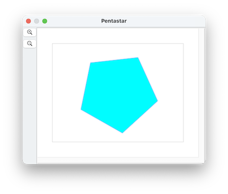
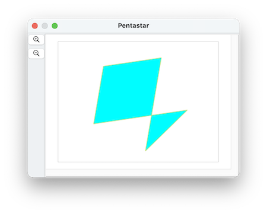

In the Polygons Part 2 page we showed how to make a five-pointed star by making a 10-sided polygon, and setting the radius of every other vertex to a smaller value. Here we'll discuss how to make a star a different way.
First we'll start by making a regular pentagon:

by running this script:
tell application "SinterPixels"
if not (exists document 1) then make new document
tell document 1
make new polygon with properties {fill color:cyan, position:{0, 0}, vertex count:5, radius:100}
end tell
end tellPlease note that the five vertices of the pentagon are the same vertices we need to draw a star, but when we draw a star, we hit the vertices in a different order. That is, if the pentagon is a polygon ABCDE, to draw a star, we want to draw the polygon ACEBD. All we need to is move the vertices into a different order.
lets give our vertices names by running this script:
tell application "SinterPixels"
tell polygon 1 of document 1
set name of vertex 1 to "A"
set name of vertex 2 to "B"
set name of vertex 3 to "C"
set name of vertex 4 to "D"
set name of vertex 5 to "E"
end tell
end tell
```
So, starting with ABCDE, lets move the B vertex ('vertex 2') to after the E vertex by running this script:
tell application "SinterPixels" tell polygon 1 of document 1 move vertex "B" to after vertex "E" end tell end tell ```
The result is this ACDEB pentagon:

Now move vertex D to after vertex B by running this script:
tell application "SinterPixels"
tell polygon 1 of document 1
move vertex "D" to after vertex "B"
end tell
end tell
```
And we have our result, a ACEBD pentagon that makes the shape of a perfect five-pointed star

#### Containing topic: [All Examples](AllExamples.html)